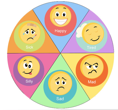
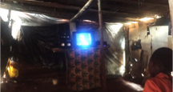
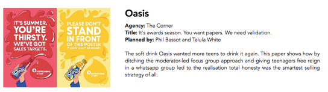
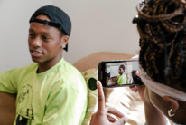

Doing the best creative development research
Girl Effect has already done lots of great creative development research projects, and the list is always growing.
Click HERE to see some case studies from our previous projects.
Or check out these inspiring ideas of how you can really bring your creative development research project to life:
Fast-forwarding to emotions

Asking people to put their feelings into words is in itself a challenge. Particularly as what we show them becomes increasingly visual and emotive. Girl Effect’s work with vulnerable young people only adds to the challenge:
Teens often are reluctant to open up and talk expansively
Language barriers mean we sometimes miss out on the nuance and context of what little is said about an idea - ‘it’s good’ can mean ‘it’s different’
Power dynamics and sensitivity come into play when we send researchers into field to speak with vulnerable audiences, limiting communication or willingness to criticise ideas
We need to find tools to get to more nuanced emotional responses.

6 things to bear in mind for concept development research
-
1
Don’t over interrogate people:
when you’re looking for instinctive responses, don’t talk about it for too long.
-
2
Look for non-verbal cues:
body language, mood and the energy in the room tell you just as much as what is said.
When do respondents lead the energy vs. when are they led?
Look for these moments as they’re a pretty good indication of what’s good about your idea or where to take it next. When do they build on your idea without being asked? When does a debate take place or a respondent convince a friend to change their mind?
-
3
Fast-forwarding to emotions:
give young people an easier way of expressing more nuanced emotions
Try asking respondents to pick from a range of emotions using emotion wheels or image cards

In GEM research teens used songs to express their feelings during workshop breaks
“Advertising is increasingly visual, research is still about words” - Advertising Planner
“What I want is to be able to capture the mood - of the creative idea and of the people when they see it” - Advertising Planner
“I often do a quick rating - just a mark out of 10 before someone can think too much” - Experienced researcher
“Sometimes just the question at the end ‘what do you remember’ is the most useful answer you can get….because in the real world people see so many things, we can only make a quick impression” - Advertising creative
You can just tell, there’s something ineffable in the room. A sound recording would never capture that” - Advertising planner
Better co-creation
There’s a lot of buzz around ‘co-creation’ in research, but with this hype comes fuzziness about what we mean and how exactly to do it.
In a sense all research is co-creation - asking respondents to help us develop and improve our ideas.
If we strip it back, it really comes down to two things: We expect our respondents to do more more work and contribute more, and we expect to push ideas further forward during a co-creation project than we would in other kinds of research.
This approach is best used in cases where you want build a closer relationship between your creative team and audience (allowing them to work together) or in situations where there is more pressure on the creative, for example a complex market where you need to really stand out or break the mold for your idea to have an impact.

Five ways of doing better co-creation:
6 things to bear in mind for concept development research
-
1
Set exercises that play to respondents strengths and give them clear, narrow direction Avoid the pitfalls: ‘now make your own
version’
A typical exercise in a co-creation sessions sets respondents something like the following challenge: ‘OK guys we’d like you take the best bits of the ideas you have seen and pull them together into an idea that works for you; you can take bits from any of the ideas, mix them as you like, and add in anything else you think is missing’. We’ve said these words ourselves many times and they can sound kind of plausible, but they make the mistake of asking respondents to make lateral leaps and strategic evaluations. The results are rarely inspiring. Instead encourage respondents to build on our ideas, at tweaks and richness.
-
2
Prime creative people to use their creative skills to build on respondents suggestions and feed in alternatives in the
session
Respondents can only take us so far, or talk about an idea for so long, it’s important to have as many different ideas and stimulus to help the creative progress in the session; if they don’t like your first idea, what back up ideas do you have to show them? This is an opportunity for the creative to interact with audience and test their thinking
- 3 Allow time to develop ideas between sessions rather than planning one long session
- 4 The people who can build on ideas we show them are a subset of our overall target audience. Take time, and allow budget, to recruit intelligent, articulate, confident participants. It’s worth considering whether we can find and recruit people who have some investment in the success of the ideas we are researching - a co-creation session with obsessive trainer aficionados is more likely to generate original ideas than one with people who like buying trainers.
- 5 Giving participants the time to think about an idea or topic before the session, means they come more prepared to contribute and develop creatives. For example, asking them to interview friends, or think about how current TV shows portray young people, will mean they arrive at the workshops with a better idea of what’s missing or what they want from a new TV drama.
“‘The most important principle in co-creation is to recognise what respondents can and can’t do for us. Typically they are great at responding to our ideas instinctively, and helping to flesh out the content of our ideas based on their lived experiences. What they are rarely good at is making creative leaps ‘what if we tried this instead..’ or making strategic evaluations” - Experienced researcher
“The best co-creation research often allows for breaks between the phases. One method we have used involves 3 stages: an initial group or set of groups, followed quickly by internal sessions with creatives to rework the ideas, followed by reconvened sessions to develop and refine the new iterations” - Experienced researcher
On respondents own terms
In formative and ethnographic research there’s a tendency to go above and beyond to conduct girl-led research, which gives respondents a sense of ownership over the research. In creative development research this can be harder and can be overlooked. Some of the most successful creative development research we’ve come across found ways to let respondents engage with the creative in their real lives, on their own terms:

In Malawi films are viewed at informal video halls or so-called ‘burncentres’6 things to bear in mind for concept development research
-
1
Keep it real
What context will idea live or be consumed in when it goes live? Where will young people be most relaxed? Consider informal and real life settings: videohalls where films are normally played, youth clubs, at home on mobile.
Open community viewings: Ahead of the development of the Malawi music video, creatives went into community spaces and played different songs and music videos observed reactions and discussed it informally with young people and parents
-
2
Let them lead with stimulus: allow respondents to ‘own’ the stimulus.
Let them get hands on, allow them to decide what they want to look at rather in being a top-down affair.
Follow the energy: In the Zathu prototyping research we held an initial observation session where respondents could immerse themselves in the prototypes – a song, magazine, radio show samle. We cam back a week later and let them decide which they wanted to talk about.
-
3
Self moderated discussions

APG Creative Award Shortlist 2017: some of the best results came from a self-moderated WhatsApp group -
4
TEGA
Can tap into a lot of the elements that make better creative development research – on their terms, communicating emotions and more agile co-creation However it also present challenges for some of the fundamentals principles - being present to observe little non verbal clues and influences, analysis of an experienced researcher to pull apart what people say and what they mean – and therefore needs to be deployed wisely, often as a compliment methodology for creative development research.
Some ways it could best be used or adapted to your project:
Record reactions: using TEGA to allow girls to consume your creative in an everyday, comfortable environment and record their gut reactions before following up with questions (great for short form content like music videos)
TEGA selfie: using TEGA to conduct self-moderated research
TEGA panels: set up panels of your target audience you can consult and get feedback from through the research or creative process
TEGAs co-creators: get feedback from trained TEGAs, who are more confident and may be better able to contribute to creative ideas
Combine with qual: combine with more traditional qualitative methods to probe more deeply on issues uncovered, and work more closely with your audience on stimulus.

“We played them a few songs and videos we knew were popular, then we played our song. We just wanted to see the energy and talk to a few people, in a way you can’t in a focus group. - GE Creative
“It try to put the stimulus on the wall or in their hands…so they can look at what they want” - Advertising Creative
“Some of the best research I did with young people was where we set up a WhatsApp group and fed them topics and let them get on with it…It’s sometimes about getting the moderator out of the way” - Advertising Creative